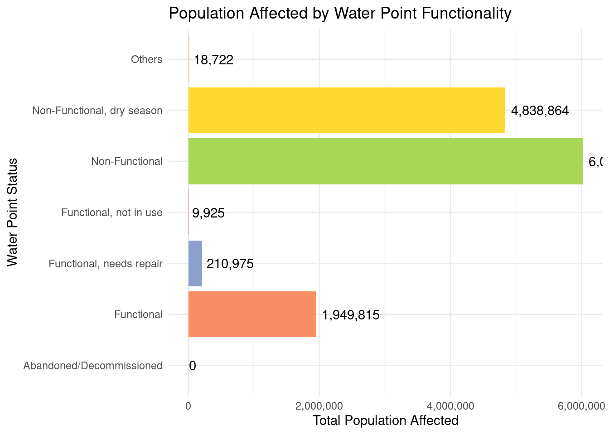
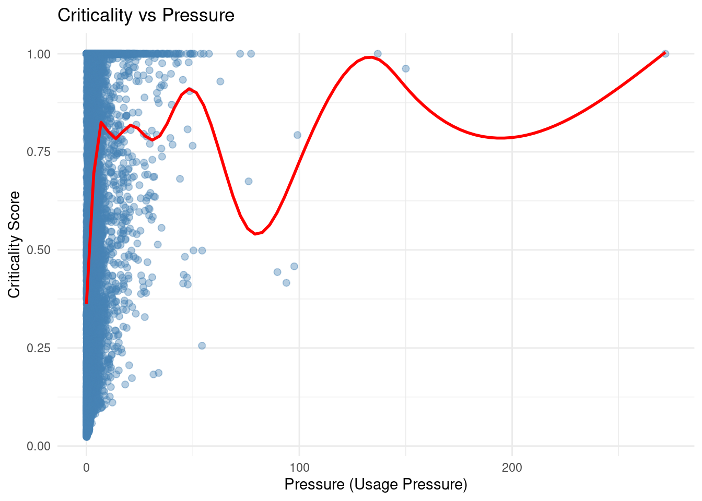

My Project
Uganda Waterpoints
This dataset provides comprehensive information on water points across Uganda. This dataset is a free dataset shared through The Humanitatian Data Exchange. Each entry represents an individual water source, such as a well or a rainwater harvesting system, with associated details covering location, type, functionality, management, and usage.
Key attributes include:
Geographical information: Latitude, longitude, and administrative divisions (region, district, sub-county).
Water source and technology: The type of water source (e.g., protected well, rainwater harvesting) and the technology used.
Operational status: Whether the water point is functional or non-functional.
Management and governance: How the water point is managed (community-managed, fee-based, etc.) and the organization responsible.
Installation and maintenance history: Year of installation, rehabilitation records, and organizations involved.
Population served: The number of people served within the vicinity of the water point.
Water quality indicators: Includes parameters such as fecal contamination presence and subjective quality assessments.
Proximity metrics: Distances to urban centers, primary, secondary, and tertiary water sources.
Analysis Goals:
The primary goals of analyzing this dataset are:
Monitoring and Evaluation (M&E): Assess the operational status and functionality of water points across different regions to track performance, identify trends, and support evidence-based decision-making.
Risk Assessment: Identify areas at higher risk of water point failure, contamination, or insufficient coverage to prioritize interventions, rehabilitation, and resource allocation.
This dataset serves as a detailed resource for monitoring water access and quality in Uganda, supporting strategic planning, management effectiveness assessment, and risk-informed decision-making for water infrastructure.
Import
To load the data, you should first load the required libraries to use:
Now, load your dataset like this
Now, we will write code to bring your data into a state where it’s ready for analysis.
Rename columns with
rename()Select columns that are relevant with
select()Remove missing values with
filter()ordrop_na()Join several dataframes with
left_join(),right_join(), etc.Create new variables with
mutate()
Save the processed data into a CSV file
Visualization
Visualization is important because it helps to visually represents the data. We will visualize 2 graphs for the dataset:
1. Bar graph of impacted people by the resource type
This visualization shows the total population impacted by the functional status of the waterpoint.
2. Scatter Plot (Criticality vs Pressure)
This scatter plot shows the relationship between pressure (how heavily a water point is used) and criticality (how essential or high-risk the water point is).

Summary of the 5 selected data variables
| Summary of Key Variables | |||
| Summary per waterpoint | |||
| Variable | Mean | Median | Std. Dev |
|---|---|---|---|
| assigned_population | 763 | 449 | 1,107 |
| distance_to_city | 83,929 | 74,413 | 47,342 |
| local_population | 1,644 | 1,028 | 1,994 |
| pressure | 3 | 2 | 5 |
| usage_cap | 282 | 300 | 39 |
In Table 1, you can see that standard deviation is generally big. The High SD means that the population assigned to water points varies hugely. Some water points serve very few people, others serve more.
Furthermore,in the same Table 1, the small mean and median but larger SD for pressure suggests that pressure values are skewed. some points have extreme under usage unlike others.
Conclusion
The analysis demonstrates substantial variability in water point usage, population served, and proximity characteristics, highlighting uneven service distribution and emphasizing the need for targeted interventions to improve equitable access and system reliability across Uganda.
This dataset is sourced from WPdx (Exchange 2023) and supported by earlier studies such as Nsubuga, Namutebi, and Nsubuga-Ssenfuma (2014). The analysis approach draws on principles from the Tidyverse ecosystem (Wickham et al. 2019).
References
Exchange, Water Point Data. 2023. “Water Point Data Exchange (UGA).”
Nsubuga, Francis NW, Edith N Namutebi, and Masoud Nsubuga-Ssenfuma. 2014. “Water Resources of Uganda: An Assessment and Review.”
Wickham, Hadley, Mara Averick, Jennifer Bryan, Winston Chang, Lucy D’Agostino McGowan, Romain François, Garrett Grolemund, et al. 2019. “Welcome to the Tidyverse.” Journal of Open Source Software 4 (43): 1686.